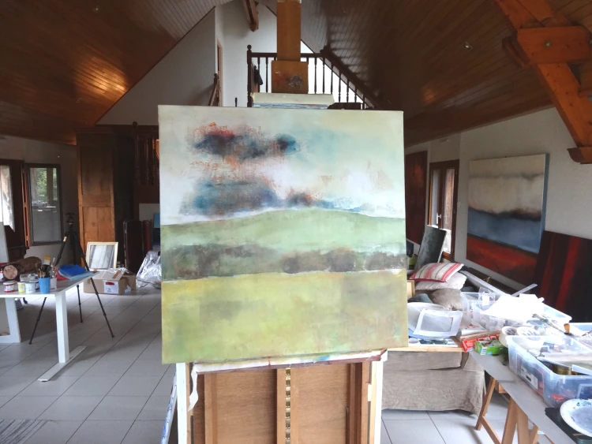
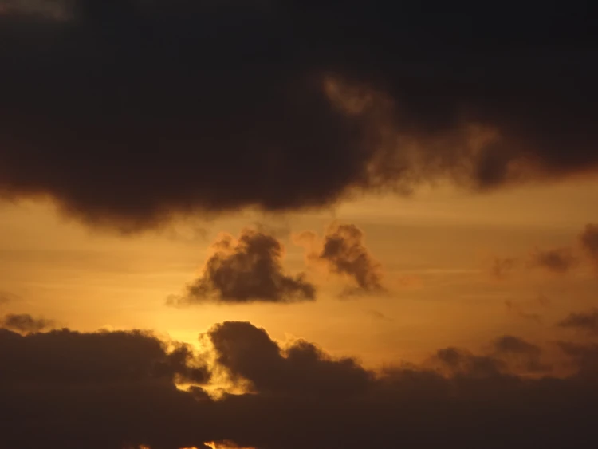
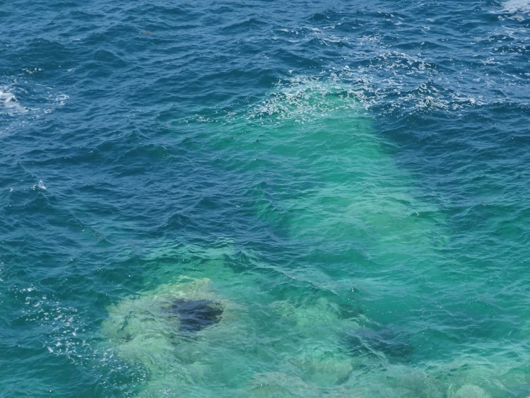
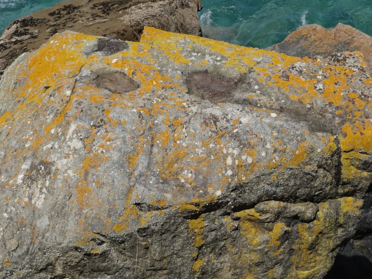
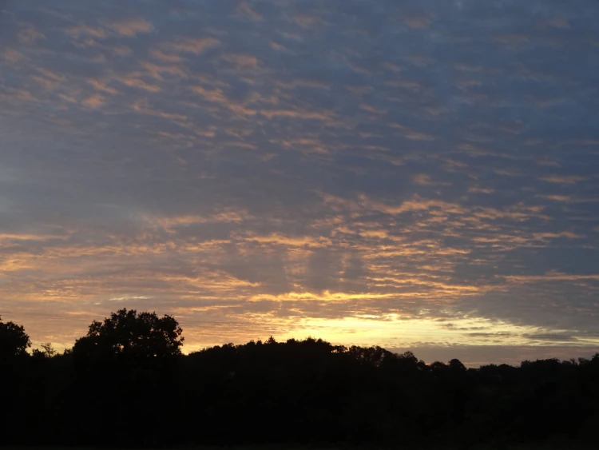

À propos
Philippa Shepherd, artiste peintre, crée des œuvres mêlant la nature et l'émotion.
Inspirée par de nombreux artistes et les paysages qu'elle visite notamment le plateau Valensole et Castellane, Philippa est d'origine anglaise mais vit en France avec sa famille.